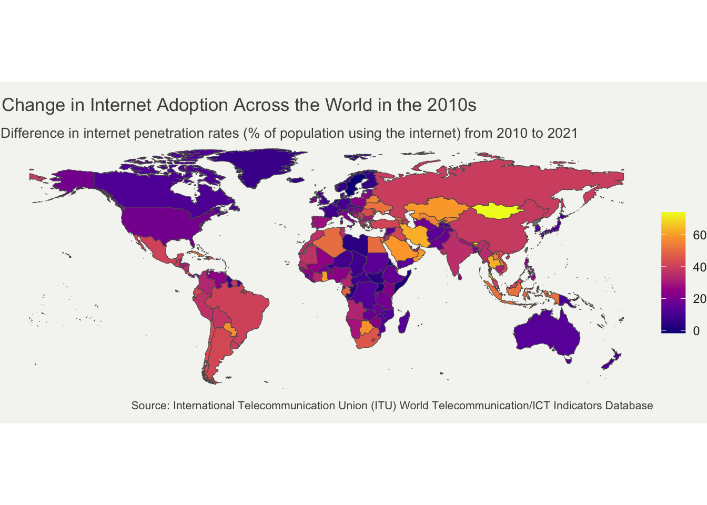
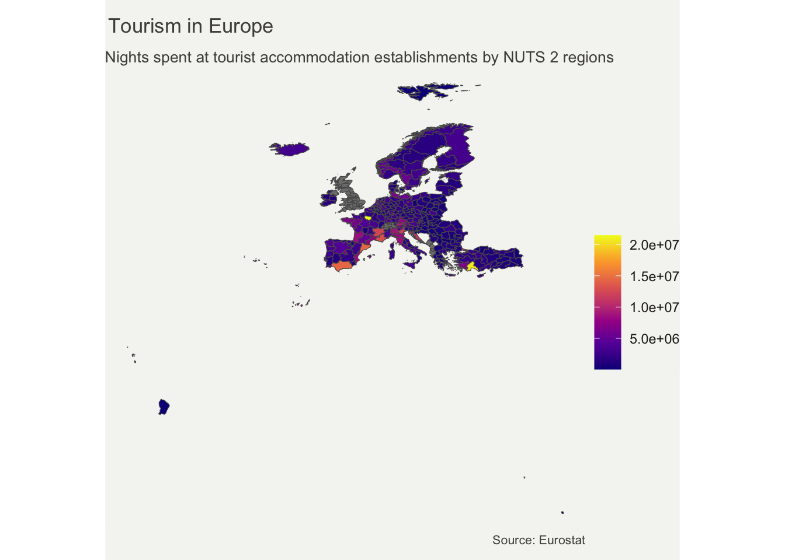
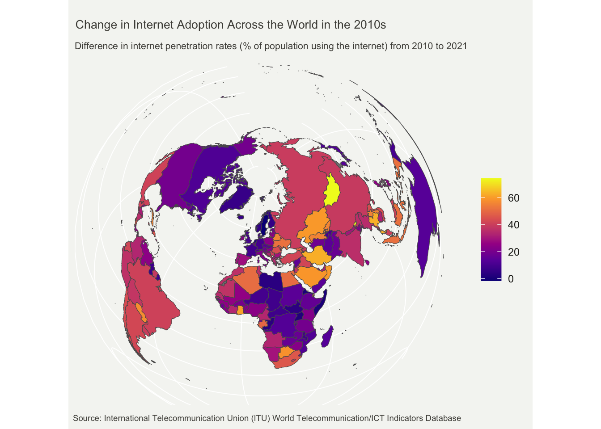

Code
library(tidyverse)
library(ggplot2)
library(wbstats)
library(rnaturalearth)For this world map, I use the rnaturalearth package that provides map data that can be visualized using other R packages. I will be mapping World Bank data using the wbstats package.
Let’s first load the packages we will need for the map.
library(tidyverse)
library(ggplot2)
library(wbstats)
library(rnaturalearth)I am interested in Internet penetration over the world. But instead of mapping its most recent value in every country, I chose to map changes in its rate. To reach this objective, some data wrangling is necessary first.
# set indicator variable to internet users (%) & get its info for later
ind <- "IT.NET.USER.ZS"
indicator_info <- filter(wb_cachelist$indicators, indicator_id == ind)
#get world map as sf object
world <- ne_countries(scale = "medium", returnclass = "sf") %>%
filter(iso_a3 != "ATA") # remove Antarctica
#get data for internet users (from 2010)
internet_data <- wb_data(ind, start_date = 2010, end_date = 2023)
#DIFFERENCE BETWEEN OLDEST & NEWEST RECORDED VALUES
#first: mutate data set to add columns with oldest and newest years recorded
internet_data <- internet_data %>%
filter(!is.na(IT.NET.USER.ZS))%>%
group_by(iso3c)%>%
mutate(min_year = min(date),
max_year = max(date)) %>%
ungroup() %>%
filter(date == min_year | date == max_year)
#then: compute the difference between oldest and newest values
final_internet_data <- internet_data %>%
group_by(iso3c) %>%
arrange(date, .by_group = TRUE) %>%
mutate(diff_users = IT.NET.USER.ZS - lag(IT.NET.USER.ZS, default = first(IT.NET.USER.ZS)))%>%
filter(diff_users != 0 & iso3c != "ATA")
#now join the geography dataset & the internet users data
users_world_df <- left_join(world, final_internet_data, by = c("iso_a3" = "iso3c"))Now on to the mapping!
it_users_map <- ggplot(users_world_df, aes(fill = diff_users)) +
geom_sf() +
theme_void()+
#more adjustements
theme(text = element_text(color = "#22211d"),
plot.background = element_rect(fill = "#f5f5f2", color = NA),
panel.background = element_rect(fill = "#f5f5f2", color = NA),
legend.background = element_rect(fill = "#f5f5f2", color = NA),
plot.title = element_text(size= 13, hjust=0.01, color = "#4e4d47",
margin = margin(b = -0.1, t = 0.4, l = 2, unit = "cm")),
plot.subtitle = element_text(size= 10, hjust=0.01, color = "#4e4d47",
margin = margin(b = -0.1, t = 0.43, l = 2, unit = "cm")),
plot.caption = element_text( size=8, color = "#4e4d47",
margin = margin(b = 0.3, r=-99, unit = "cm")),
legend.position = "right")+
scale_fill_viridis_c(option = "plasma")+
labs(title = "Change in Internet Adoption Across the World in the 2010s",
subtitle = "Difference in internet penetration rates (% of population using the internet) from 2010 to 2021",
fill = NULL,
caption = paste("Source:", indicator_info$source_org))
it_users_map
Describe the patterns in your map. What story are you communicating with your map? Does the map effectively communicate your story? Why or why not?
I have used the eurostat R package, that contains tools to access open data from Eurostat, a database of high-quality statistics and data on Europe.
An important concept here is the Nomenclature of territorial units for statistics (NUTS) classification. It is the system for dividing up the economic territory of the EU and the UK for the purpose of the socio-economic analyses of the regions. We will be using data on the NUTS 2 level, which is the statistical unit of approximately 800,000 to 3 million people.
For the spatial data, we will use the giscoR package. This package provides an easy interaction with the GISCO API, which gives access to a database containing core geographical data covering the whole of Europe at different levels.
Let’s first load the packages we will need for the map.
library(tidyverse)
library(sf)
library(ggplot2)
library(eurostat) #pull data from eurostat
library(giscoR) #pull NUTS 2 & country shapefilesI am interested in regional tourism statistics, so the indicator I will be mapping is the occupancy in collective accommodation establishments. More precisely, the arrivals at tourist accommodation establishments by NUTS 2 regions.
For this data wrangling, it is important to note that, although the last year measured is 2022, some regions only have data for 2021. We will therefore use the most recent available data for each region.
#1.NUTS2 AND SHAPEFILES ---------
#define longlat projection
crsLONGLAT <- "+proj=longlat +datum=WGS84 +no_defs +ellps=WGS84 +towgs84=0,0,0"
#get sf object of Europe
nuts2 <- giscoR::gisco_get_nuts(
year = "2021",
resolution = "3",
nuts_level = "2") %>%
sf::st_transform(crsLONGLAT)
#get country codes
cntrys <- giscoR::gisco_get_countries(
year = "2020",
resolution = "3",
region = c("Europe", "Asia")) %>%
sf::st_transform(crsLONGLAT)
# Countries in giscoR object but NOT in eurostat dataset
# BA = Bosnia & Herzegovina
# BY = Belarus; GE = Georgia
# MD = Moldova; RU = Russia
# UA = Ukraine
non_eu_list <- c(
"BA", "BY", "GE",
"MD", "RU", "UA")
eu_list <- c(unique(nuts2$CNTR_CODE))
eu <- cntrys |>
filter(CNTR_ID %in% eu_list)
non_eu <- cntrys |>
filter(CNTR_ID %in% non_eu_list)
#2. EUROSTAT DATA -----------
#indicator for our variable of interest
ind2 <- "tour_occ_arn2"
# get NUTS2-level data
eurostat_df <- eurostat::get_eurostat(
ind2,
time_format = "num") %>%
filter(nace_r2 == "I551-I553" & time >= 2020 & c_resid == "TOTAL" & unit == "NR") %>%
select(geo, time, values)
names(eurostat_df)[1] <- "NUTS_ID"
#convert to wide data and keep only latest data
wide_df <- pivot_wider(eurostat_df,
names_from = time,
values_from = values)%>%
mutate(values = if_else(is.na(`2022`), `2021`, `2022`)) %>%
select(NUTS_ID, values)
#3. MERGE SHP AND DATA -----------
df <- left_join(nuts2, wide_df, by = "NUTS_ID")Now that we have merged the shapefile and data from Eurostat, following the NUTS 2 classification, we can map our chosen indicator
#bounding boxtourism_eu_map <- ggplot(df, aes(fill = values)) +
geom_sf() +
theme_void()+
#more adjustements
theme(text = element_text(color = "#22211d"),
plot.background = element_rect(fill = "#f5f5f2", color = NA),
panel.background = element_rect(fill = "#f5f5f2", color = NA),
legend.background = element_rect(fill = "#f5f5f2", color = NA),
plot.title = element_text(size= 13, hjust=0.01, color = "#4e4d47",
margin = margin(b = -0.1, t = 0.4, l = 2, unit = "cm")),
plot.subtitle = element_text(size= 10, hjust=0.01, color = "#4e4d47",
margin = margin(b = -0.1, t = 0.43, l = 2, unit = "cm")),
plot.caption = element_text( size=8, color = "#4e4d47",
margin = margin(b = 0.3, r=-99, unit = "cm")),
legend.position = "right")+
scale_fill_viridis_c(option = "plasma")+
labs(
title = "Tourism in Europe",
subtitle = "Nights spent at tourist accommodation establishments by NUTS 2 regions",
fill = NULL,
caption = paste("Source: Eurostat"))
tourism_eu_map
While the default “fill” in the first map worked fine, here, we notice that most observations are on the lower end of the spectrum. With only a few regions distinguisly higher than the rest. This map would benefit from having a legend split into breaks
Describe the patterns in your map. What story are you communicating with your map? Does the map effectively communicate your story? Why or why not?
it_users_map2 <- ggplot(users_world_df, aes(fill = diff_users)) +
geom_sf() +
theme_void()+
#more adjustements
theme(text = element_text(color = "#22211d"),
plot.background = element_rect(fill = "#f5f5f2", color = NA),
panel.background = element_rect(fill = "#f5f5f2", color = NA),
legend.background = element_rect(fill = "#f5f5f2", color = NA),
plot.title = element_text(size= 13, hjust=0.01, color = "#4e4d47",
margin = margin(b = -0.1, t = 0.4, l = 2, unit = "cm")),
plot.subtitle = element_text(size= 10, hjust=0.01, color = "#4e4d47",
margin = margin(b = -0.1, t = 0.43, l = 2, unit = "cm")),
plot.caption = element_text( size=8, color = "#4e4d47",
margin = margin(b = 0.3, r=-99, unit = "cm")),
legend.position = "right")+
scale_fill_viridis_c(option = "plasma")+
labs(
title = "Change in Internet Adoption Across the World in the 2010s",
subtitle = "Difference in internet penetration rates (% of population using the internet) from 2010 to 2021",
fill = NULL,
caption = paste("Source:", indicator_info$source_org))
it_users_map2How does the new choice affect the map? Does the original or modified approach better represent the data? Why?
2 * 2[1] 4How does the new choice affect the map? Does the original or modified approach better represent the data? Why?
it_users_map2 <- ggplot(users_world_df, aes(fill = diff_users)) +
geom_sf() +
coord_sf(crs = "+proj=laea +lat_0=52 +lon_0=10 +x_0=4321000 +y_0=3210000 +ellps=GRS80 +units=m +no_defs ")+
#more adjustements
theme(text = element_text(color = "#22211d"),
plot.background = element_rect(fill = "#f5f5f2", color = NA),
panel.background = element_rect(fill = "#f5f5f2", color = NA),
legend.background = element_rect(fill = "#f5f5f2", color = NA),
axis.text = element_blank(),
axis.ticks = element_blank(),
plot.title = element_text(size= 10, hjust=0.01, color = "#4e4d47",
margin = margin(b = -0.1, t = 0.4, l = 2, unit = "cm")),
plot.subtitle = element_text(size= 8, hjust=0.01, color = "#4e4d47",
margin = margin(b = -0.1, t = 0.43, l = 2, unit = "cm")),
plot.caption = element_text( size=7, color = "#4e4d47"),
legend.position = "right")+
scale_fill_viridis_c(option = "plasma")+
labs(
title = "Change in Internet Adoption Across the World in the 2010s",
subtitle = "Difference in internet penetration rates (% of population using the internet) from 2010 to 2021",
fill = NULL,
caption = paste("Source:", indicator_info$source_org))
it_users_map2